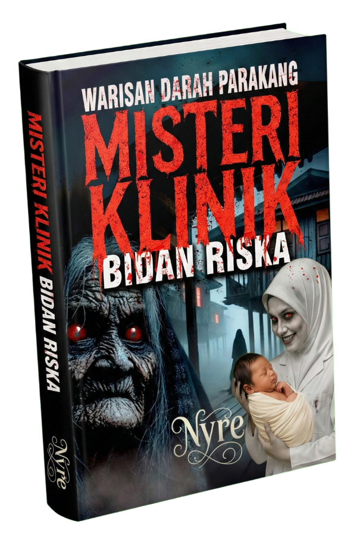

"Jangan memanggilnya saat malam Jumat..."
Apa yang terjadi jika bidan yang seharusnya menolong persalinan Anda ternyata adalah Parakang? Sosok pemangsa organ dalam yang bersembunyi di balik seragam putih bersih.